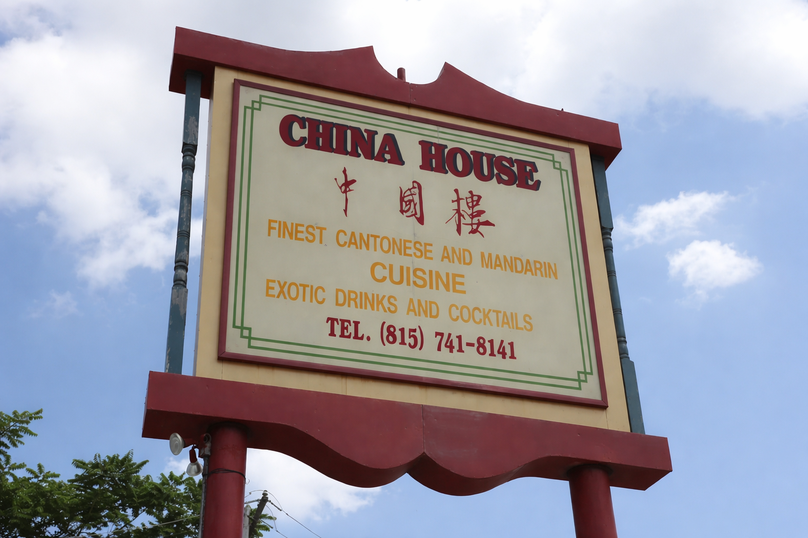

Overview
Status: Work in Progress
In today’s digital world, a website often serves as the first point of connection between a restaurant and its customers. This project explores how thoughtful UI and accessibility can connect users to Chinese cuisine through a clean, intuitive experience.
